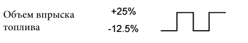
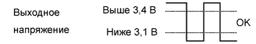
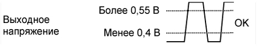

DTC P2237 Обрыв в цепи тока накачки кислородного датчика (A/F) (датчик 1 ряда 1) |
DTC P2238 Слабый ток в цепи тока накачки кислородного датчика (A/F) (датчик 1 ряда 1) |
DTC P2239 Сильный ток в цепи тока накачки кислородного датчика (A/F) (датчик 1 ряда 1) |
DTC P2240 Обрыв в цепи тока накачки кислородного датчика (A/F) (ряд 2, датчик 1) |
DTC P2241 Слабый ток в цепи тока накачки кислородного датчика (A/F) (ряд 2, датчик 1) |
DTC P2242 Сильный ток в цепи тока накачки кислородного датчика (A/F) (ряд 2, датчик 1) |
DTC P2252 Слабый ток в цепи базового заземления кислородного датчика (A/F) (ряд 1, датчик 1) |
DTC P2253 Сильный ток в цепи базового заземления кислородного датчика (A/F) (ряд 1, датчик 1) |
DTC P2255 Слабый ток в цепи базового заземления кислородного датчика (A/F) (ряд 2, датчик 1) |
DTC P2256 Сильный ток в цепи базового заземления кислородного датчика (A/F) (ряд 2, датчик 1) |
| № DTC | Условие обнаружения DTC | Неисправный участок |
| P2237 P2240 | Обрыв цепи между контактами A1A+/A2A+ и A1A-/A2A- датчика состава топливовоздушной смеси во время работы двигателя (логика диагностирования за 2 поездки). |
|
| P2238 P2241 | Выполняется любое из следующих условий (логика диагностирования за 2 поездки):
|
|
| P2239 P2242 | Напряжение на контакте A1A+/A2A+ составляет более 4,5 В (логика диагностирования за 2 поездки). |
|
| P2252 P2255 | Напряжение на контакте A1A-/A2A- составляет не более 0,5 В (логика диагностирования за 2 поездки). |
|
| P2253 P2256 | Напряжение на контакте A1A-/A2A- составляет более 4,5 В (логика диагностирования за 2 поездки). |
|
| Информация на дисплее (датчик) | Объем впрыска топлива | Состояние | Напряжение |
| AFS Voltage B1S1 или AFS Voltage B2S1 (датчик состава топливовоздушной смеси) | +25% | Обогащение | Менее 3,1 В |
| AFS Voltage B1S1 или AFS Voltage B2S1 (датчик состава топливовоздушной смеси) | -12,5% | Обеднение | Более 3,4 В |
| O2S B1S2 или O2S B2S2 (подогреваемый кислородный датчик) | +25% | Обогащение | Более 0,55 В |
| O2S B1S2 или O2S B2S2 (подогреваемый кислородный датчик) | -12,5% | Обеднение | Менее 0,4 В |
| Корпус | Выходное напряжение напряжение датчика состава топливовоздушной смеси (датчик 1) | Выходное напряжение подогреваемого кислородного датчика (датчик 2) | Наиболее вероятное место нахождения неисправности |
| 1 |   |  | - |
| 2 |  |
| |
| 3 | |
| |
| 4 | | |
|
| 1.ПРОВЕРЬТЕ ЖГУТ ПРОВОДОВ И РАЗЪЕМ (ДАТЧИК СОСТАВА ТОПЛИВОВОЗДУШНОЙ СМЕСИ – ECM) |
Отсоедините разъем датчика состава топливовоздушной смеси.
Включите зажигание (IG).
Измерьте напряжение в соответствии со значениями, приведенными в таблице.
| Контакты для подключения диагностического прибора | Положение переключателя | Заданные условия |
| C25-2 (+B) - масса | Зажигание включено (IG) | 11 - 14 В |
| C26-2 (+B) - масса | Зажигание включено (IG) | 11 - 14 В |
Выключите зажигание.
Отсоедините разъем ЭБУ.
Измерьте сопротивление в соответствии со значениями, приведенными в таблице ниже.
| Контакты для подключения диагностического прибора | Условие | Заданные условия |
| C25-1 (HA1A) - C37-17 (HA1A) | Всегда | Менее 1 Ом |
| C25-3 (A1A+) - C36-1 (A1A+) | Всегда | Менее 1 Ом |
| C25-4 (A1A-) - C36-2 (A1A-) | Всегда | Менее 1 Ом |
| C26-1 (HA2A) - C37-19 (HA2A) | Всегда | Менее 1 Ом |
| C26-3 (A2A+) - C36-7 (A2A+) | Всегда | Менее 1 Ом |
| C26-4 (A2A-) - C36-8 (A2A-) | Всегда | Менее 1 Ом |
| Контакты для подключения диагностического прибора | Условие | Заданные условия |
| C25-1 (HA1A) или C37-17 (HA1A) - масса | Всегда | 10 кОм или более |
| C25-3 (A1A+) или C36-1 (A1A+) - масса | Всегда | 10 кОм или более |
| C25-4 (A1A-) или C36-2 (A1A-) - масса | Всегда | 10 кОм или более |
| C26-1 (HA2A) или C37-19 (HA2A) - масса | Всегда | 10 кОм или более |
| C26-3 (A2A+) или C36-7 (A2A+) - масса | Всегда | 10 кОм или более |
| C26-4 (A2A-) или C36-8 (A2A-) - масса | Всегда | 10 кОм или более |
Подсоедините разъем датчика состава топливовоздушной смеси.
Подсоедините разъем ECM.
|
| ||||
| OK | |
| 2.ЗАМЕНИТЕ ДАТЧИК СОСТАВА ТОПЛИВОВОЗДУШНОЙ СМЕСИ |
Замените датчик состава топливовоздушной смеси (Нажмите здесь).
| ДАЛЕЕ | |
| 3.ВЫПОЛНИТЕ ПОЕЗДКУ В ПРОВЕРОЧНОМ РЕЖИМЕ |
| ДАЛЕЕ | |
| 4.ПРОВЕРЬТЕ, ВЫВОДИТСЯ ЛИ КОД DTC СНОВА |
Подсоедините портативный диагностический прибор к DLC3.
Включите зажигание (IG) и портативный диагностический прибор.
Сбросьте коды DTC (Нажмите здесь).
Запустите двигатель.
Дайте двигателю поработать на холостом ходу в течение не менее 5 минут.
Войдите в следующие меню: Powertrain / Engine and ECT / DTC / Pending.
Считайте ожидающие обработки коды DTC.
| Результат | Следующий шаг |
| Коды не выводятся | А |
| P2237, P2240, P2238, P2241, P2239, P2242, P2252, P2255, P2253 или P2256 выводятся | B |
|
| ||||
| А | ||
| ||